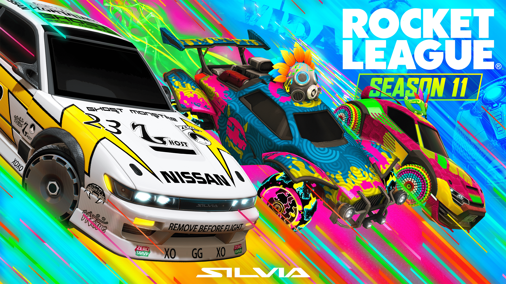
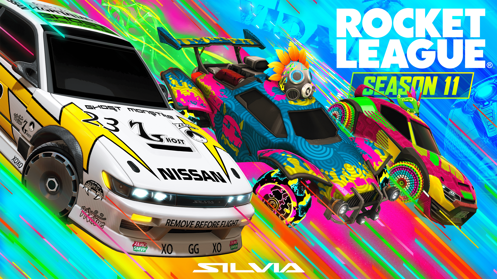

| Horarios | Segunda Feira | Terça Feira | Quarta Feira |
|---|---|---|---|
| 07:30/08:00 |
apresentação e abertura
Condução: Será realizado pela coordenadora do curso técnico integrado de informática Profª Me. Grazielle Vieira Garcia, e pelo coordenador do curso de ciências da computação Prof. Dr. Manassés Ribeiro.
|
Maratona de Programação
Descrição: Reprodução em menor escala das competições que ocorrem na área de programação como a OBI e a Imagine Cup. Com a maratona pretende-se despertar no aluno o interesse de participar das competições supracitadas representando o instituto.
|
Troca de figurinhas da copa do mundo
Descrição: Espaço dedicado para a troca de figurinhas da Copa do Mundo entre os discentes.
|
| 8:00/8:30 |
Palestra 1"Você sabe o que é LGPD?"
Condução: Profª. Esp. Mirataira Helena Mascarello Haus – Universidade do Oeste de Santa Catarina – UNOES
|
Oficina 1"Arduído: codificação para microcontroladores"
Condução: Prof. Me. Pablo Andrés Reyes Meyer, Mestrado Acadêmico em Desenvolvimento e Sociedade pela Universidade Alto Vale do Rio do Peixe. Atualmente é docente e coordenador do curso de Engenharia Elétrica no Instituto Federal Catarinense (IFC), campus Videira.
|
Jogos de tabuleiro
Descrição: Representa o encerramento do evento e através dela espera-se que os alunos tenham um momento de socialização com seus pares. Nela estarão disponíveis atividades relacionadas a área de jogos como partidas de jogos de tabuleiros moderno que desenvolvem o raciocínio lógico e estratégico bem como o reconhecimento de padrões fundamental para resolução de problemas do mundo real dentro do escopo computacional.
|
| 8:30:09:00 |
Palestra 2"Nômades digitais e Home Office"
Condução: Prof. Esp. Maurício Natanael Ferreira - Formado em Sistemas de Informação com especialização em Desenvolvimento Web. Atualmente Fullstack Engineer na Clevertech.
|
Oficina 2"Criaçaõ de boots para Discord"
Condução: Prof. Esp. Maurício Natanael Ferreira - Formado em Sistemas de Informação com especialização em Desenvolvimento Web. Atualmente Full Stack Engineer na Clevertech.
|
Jogos Eletroeletrônicos
Descrição: Campeonatos de jogos multiplayer que mobiliza a atlética organizada pelos alunos do campus.
|
| 9:30/10:00 |
Oficina 1"Construção de robô segue linha com NTX"
Condução: Prof. Esp. Jonathan Faraco França. Graduado em Engenharia Elétrica pela Universidade Federal de Santa Catarina (UFSC), especialização em Formação Pedagógica para Educação Profissional e Tecnológica pelo Instituto Federal de Santa Catarina (IFSC), Mestrado Profissional em Educação Básica, em andamento, na Universidade Alto Vale do Rio do Peixe (UNIARP). Atualmente é instrutor de robótica - SESI - Departamento Regional do Estado de Santa Catarina.
|
Oficina 3"GitHub e Git"
Condução: Arthur Zago – Tecnólogo em Informática, Graduando em Ciência da Computação no Instituto Federal Catarinense (IFC), campus Videira.
|
Amostra de cosplay
O Cosplay é uma atividade de arte performática onde os participantes usam fantasias e acessórios para representar um personagem da cultura pop, filmes, séries, games, programas de tv e da internet.
|
| 10:00/11:30 |
Oficina 2"Conhecendo uma impressora 3D"
Condução: Prof. Me. João Hemkemaier. Mestre em Mecatrônica pelo Instituto Federal de Santa Catarina (IFSC), graduado em Eletroeletrônica pela Universidade do Sul de Santa Catarina (UNISUL), especialista em docência para a Educação Profissional pelo Instituto Federal de Santa Catarina (IFSC). Atualmente é professor no Instituto Federal Catarinense (IFC) - campus Videira.
|
Oficina 4"Roda da conversa sobre saúde mental na escola"
Condução: Profª. Dra. Eliana Teresinha Quartiero. Doutora em Psicologia Social e Institucional pela Universidade Federal do Rio Grande do Sul. Atualmente é docente no Instituto Federal Catarinense (IFC), campus Videira.
|
Encerramento do evento
Descrição: Cerimônia de agradecimento e encerramento do evento
|
| 13:30/15:00 |
Oficina 3"Fotografia"
Condução: Sr. Fabiano Martins, fotógrafo profissional há 12 anos, é colecionador de diversas premiações, palestrante, já foi indicado a fotógrafo do ano e já viajou o Brasil e diversos países com o seu trabalho e agora com toda sua bagagem e experiência, se dedica a ensinar pessoas que não são fotógrafas, através do Foto Mobile 3.0 a usar o celular para tirar fotos incríveis seja por hobby ou para iniciar na profissão e fazer renda todo mês com fotografia.
|
Oficina 5“Medidas elétricas, experimentos e construção e análise de gráficos com planilha Google”
Condução: Prof. Dr. Emerson Luiz Lapolli. Doutorado em Física pela Universidade Federal de Santa Catarina. Atualmente é docente no Instituto Federal Catarinense (IFC), campus Videira.
|
|
| 13:30/15:00 |
Oficina 4"Elaboração de currículo"
Condução: Profª. Dra. Nadir Paula da Rosa, Doutorado em Desenvolvimento Rural pela Universidade Federal do Rio Grande do Sul (UFRS). Atualmente é professora no Instituto Federal Catarinense (IFC) - campus Videira.
Profª. Me. Josy Alvarenga Carvalho Gardin, Mestrado em Administração na área de concentração Gestão da Tecnologia e da Produção pela UFRGS. Atualmente é professora e Diretora de Ensino, Pesquisa e Extensão (DEPE) do Instituto Federal Catarinense (IFC) - campus Videira. |
Oficina 6"A aplicabilidade do Inglês na área de Informática”
Profª Me. Grazieli Ferreira da Rosa com mestrado em Letras pela Universidade Federal de Rondônia. Atualmente é docente e coordenadora do curso técnico de Informática integrado ao ensino médio no Instituto Federal Catarinense (IFC), campus Videira.
|
|
| 13:30/15:00 |
Oficina 5"Preparação para o mundo do trabalho"
Condução: Prof. Dr. Marcos Roberto Mesquita, Doutorado em Ciências Sociais pela Universidade Estadual de Campinas e Mestrado em Sociologia pela Universidade Estadual de Campinas. Atualmente é professor no Instituto Federal Catarinense (IFC), campus Videira.
|
Oficina 7“Disco pode ser uma fonte histórica? Uma análise da Guerra Fria através do heavy metal dos anos 1980.”
Condução: Prof. Dr. Bruno Pereira de Lima Aranha. Doutorado em História pela Universidade Federal do Estado do Rio de Janeiro. Atualmente é docente substituto no Instituto Federal Catarinense, campus Videira.
|
|
| 8:00 |
Condução: Prof. Dr. Marcos Roberto Mesquita, Doutorado em Ciências Sociais pela Universidade Estadual de Campinas e Mestrado em Sociologia pela Universidade Estadual de Campinas. Atualmente é professor no Instituto Federal Catarinense (IFC), campus Videira.
|
Gincana SCI
Descrição: Momento para os alunos participarem de atividades lúdicas dentro do contexto da informática que promovam a relação com os conhecimentos que fazem parte do cotidiano dos alunos.
|